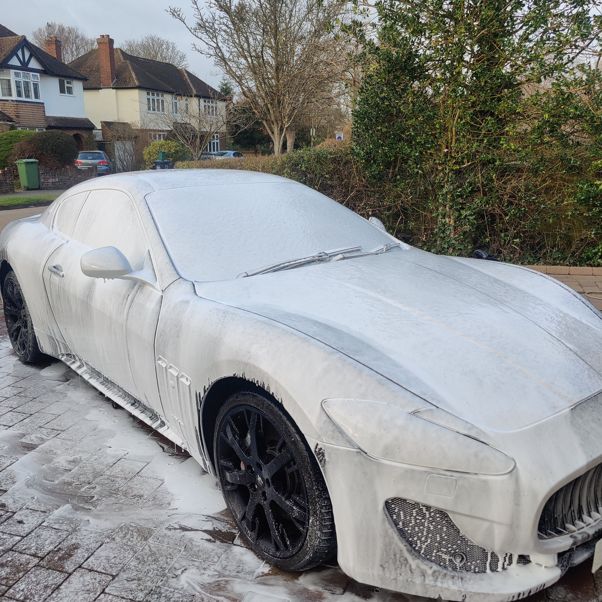
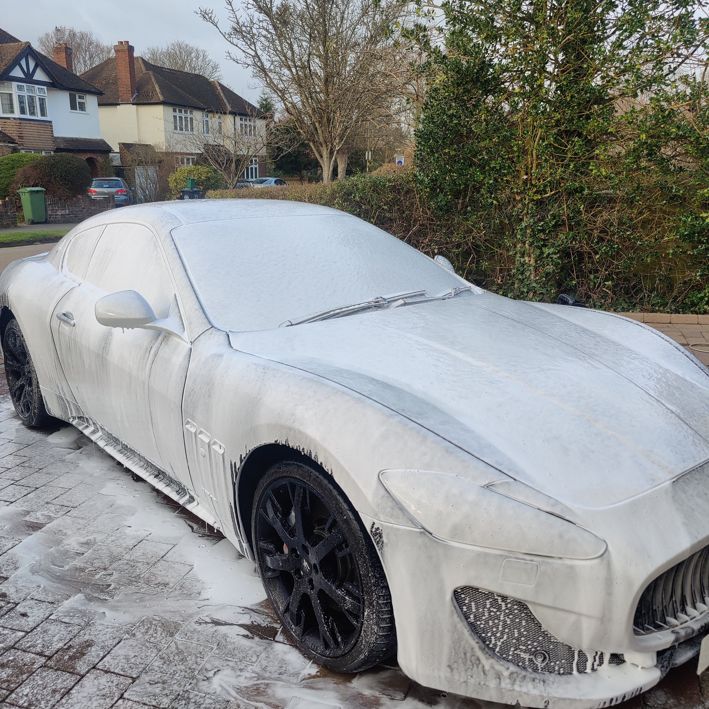

Background:
I decided a second car was needed in August 2021 and after a lot of
research, it was clear a Maserati Granturismo 4.7 MC Shift would be
perfect.
Looks are subjective, but I have always liked the GranTurismo more than any Ferrari, Porsche or German model.
The combination of Ferrari V8 engine, a "mechanical" 6-speed robotic sequential gearbox, with a twin dry plate clutch (same as Ferrari 599GTB), great looks, 4 seats and practical boot space means it really is an all round car which can actually be used. These days it is not the fastest, lightest or most technologically advanced car, but it looks amazing and in reality has way more power than can be safely (or legally) be used on UK roads.
Having a young family and a desire to play golf, I also needed a practical car which could fit passengers and golf clubs (plus a trolley!), this therefore ruled out any 2 seater and almost all impractical 2+2 cars (Ferrari California).
First attempt: Forum
After lots of browsing I came across a SportsMaserati member who was looking to upgrade their facelift MC Shift for a MC Stradale. I sent them a message, they answered some questions and agreed a price. Unfortunately I then went on holiday for 2 weeks and someone else moved quicker and bought the car. The car looked great, although I was not too sure on the blue interior roof liner.


back to searching and waiting...
Second attempt: AutoTrader
I then saw this car listed, which looked great and had only 27,000 miles.
I had not been too keen on a white car, but the contrasting front splitter, wing mirrors, side skirts and spoiler give the car a much more sporty presence which matches the V8 sound and MC Shift gearbox.
After speaking with the dealer, he assured me everything was perfect:
- It had been maintained with no expense spared
- New tyres all round
- Brakes in great condition, approximately 40% worn
- Interior and exterior were faultless
- Skyhook suspension, front and rear parking sensor, plus full interior and exterior carbon packs
After negotiating a price, I then arranged for a PPI to be carried out by Dale from Prestigue Autoworks. The findings were a bit of a surprise and the highlights were:
- Front discs and pads needed immediate replacement - 80% worn and corroded. Rear pads also 80% worn.
- Upper bush worn and needs replacing - this had also affected the alignment of the car and had worn out the inside tread on the front tyres.
- Front springs were corroded and needed replacing
- One of the front tyres had a superglued sidewall - the inspection suggested this was to hide a chord in an MOT test
- Wing mirrors and door handles were actually carbon wraps and peeling
- Battery held in place by some carpet
- Large dent in the passenger door and flaking paint on both doors
The dealer was unwilling to negotiate the price further despite misleading me - Thanks for wasting my time and money...


Solution: Richard Grace
I called Richard Grace to see if he had any cars coming into stock soon, or if he knew anyone looking to sell soon.
After a good chat, Richard suggested there was nothing due in soon, but he could call a client he sold a car to a few months ago as he knows they only keep cars for 3-6 months.
I knew the car he was talking about as I had seen it listed and then subsequently sold just when I had started seriously looking to buy.
A few hours later I had a message from Richard suggesting a deal could be done and the price would depend on how I want it handling (nice to have options!)
The car had been only been sold 80 days earlier, so my options were:
- Richard collects the car, does a full inspection, usual pre-sale "corrective" work carried out and apply a fresh warranty.
- Richard delivers transfers the car from previous owner to me along with the balance of warranty.
Having seen so many positive reviews of Richard Grace online and the very honest way he talked about the car, I felt very comfortable in going for the transfer option, especially as the car had only been with the owner for 80 days! Richard had also sold the car 4 times since the original owner, so he knew the car very well.
Some pictures from when it had previously been listed:
This was the best car I came across in my search and the highlights are:
- Previously inspected and serviced at Autoshield Maserati in Manchester
- Facelift MC Shift - 1 of 43 in the UK
- Recently replaced front discs, pads, clutch and release bearing
- Black on black - Nero Carbonio with Nero Poltrona Frau Leather and 20" Nero Neptune wheels
- Nero Alcantara Headlining
- Updated Sport Skyhook active suspension
- Titanium (painted) Brake Calipers
- Aluminium Racing Pedals
- BOSE Stereo System
- Front and Rear Park Distance Control
- Rain sensitive wipers, Xenon Headlamps, Multi-zone climate control, Comfort Pack, to Include Heated Electric Seats with Driver Memory
As this is a "Granturismo Sport" (rather than a "Granturismo S"), it has the benefits of the 2012 design update. The main benefits of these are:
- Increased power output to 460bhp and 520nm torque
- Updated seats - more modern looking, better comfort and 2cm more rear leg room
- Updated front bumper - matches look of MC Stradale
- Redesigned sterring wheel - flat bottom part
- LED tail lights
Online Background Check
For the sake of £9, I also ran a check on the vechicle online.
I used vcheck.uk who give a very comprehensive review and also provide a £40,000 guarantee on the data they provide. The main options they provide data on are:
- Insurance write-off
- Salvage auction history
- Stolen check
- Number of previous owners, length of ownership and milage (dealers count as owners)
- Number plate changes
- Outstanding finance
Nothing which came up caused concern, outstanding finance was flagged, but this was the dealers finance on the car.

Delivery Day
At around 11:30am I heard the arrival of a rumbling V8!
Richard gave me a quick tour of the car, pointing our some very small imperfections (all to be expected!) then got me striaght into the drivers seat for the "test drive" and talked about various aspects of the car.
When we returned, he showed me how all the electronics of the car worked and some useful owner tips, such as:
- It is good to turn off the parking brake and leave the car in gear when parking. The parking brake is known to lock and can then cause damage if you try to drive.
- Do not keep turning the wingmirror control in a circle, turn one way then back the other.
- Use a good trickle charger as the battery is normal the source of issues.
In the excitment I did not take any photos straightaway, but once cleaned it looked even better:
 

I know most people do not care about practicality of their "sports car", but having 4 practical seats (for adults!) and a good boot (clubs and trolley) makes this car a great all round prospect.